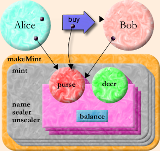

| |
From
Objects To |
||||||
Capability Operating Systems
The capability was first invented by secure operating system designers. It started as a way to protect "primitive" resources such as memory segments [Dennis66], but was soon generalized [Wulf74] into a protected ability to invoke arbitrary services provided by other processes. For each process, there is a table associating small numbers (similar in spirit to Unix file descriptors) with the capabilities held by that process. These small numbers serve the same function as variable names do in the lambda calculus [Rees96]. In a pure capability operating system, such as KeyKOS [Hardy85] or EROS [Shapiro99], a process's only source of authority is the capabilities that it holds.
A capability is normally thought of as a pairing of a designated process with a set of services that the process provides. For example, in KeyKOS a capability carries a numeric tag which an invoked process receives along with an incoming message. The process then typically dispatches to a specific method based on both the numeric tag and the KeyKOS equivalent of a message name. The equivalence with objects is clear: the behavior looked up in this way, paired with the process-state, is the same sort of state-and-behavior that defines an object. When different capabilities make different behaviors from the same process available via different numeric tags, we can view the process as a composite and each of its capabilities as a facet.
Patterns of Cooperation Without Vulnerability
The capability model is, in a sense, the object model taken to its logical extreme. Where object programmers seek modularity -- a decrease in the dependencies between separately thought-out units -- capability programmers seek security, recognizing that required trust is a form of dependency. Object programmers wish to guard against bugs: a bug in module A should not propagate to module B. Capability programmers wish to guard against malice. However, if B is designed to be invulnerable to A's malice, it is likely also invulnerable to A's bugs.
Historically, although capability programmers have created stronger modularity in this sense, they have harvested fewer of modularity's benefits. Object programmers have explored patterns [Gamma95] -- a taxonomy of stereotyped arrangements of abstractions that successfully work together. These abstractions work well together because the modularity boundaries between them aid their combination rather than obstructing it. In unifying the object paradigm with the capability paradigm, we hope to see a growing taxonomy of patterns of cooperation without vulnerability -- stereotyped arrangements in which mutually suspicious, separately interested agents may work together safely to achieve diverse goals. This paper explains a few such patterns.
So how do we get from objects to capabilities? It suffices to prohibit certain deviations from pure object computation. (It is also convenient, though not essential, to add a rights amplification primitive as explained below.) What are these new prohibitions?
-
Only Connectivity Begets Connectivity. Consider all the ways Bob can obtain access to Carol. Only four possibilities are allowed:
-
Connectivity by Introduction. Somebody sends Bob a reference to Carol, as shown in the Granovetter Diagram -- If Bob and Carol already exist, this is the only way Bob can obtain access: via a third party, such as Alice, under the three conditions stated in the Perspectives section above.
-
Connectivity by Parenthood. If Bob already exists and Carol does not, Bob may create Carol. Any object system must have an object creation primitive. Should Bob use this primitive to create Carol, Bob then has the only reference to Carol, unless and until he sends this reference to someone else. In the earlier example of a makePoint creating a point, the makePoint function at that moment has exclusive access to the new point.
-
Connectivity by Endowment. If Carol already exists and Bob does not, and if Bob's creator has access to Carol at the time of Bob's creation, Bob may be created sharing this access -- In essence, Bob is born holding a reference to Carol. Refering again to the makePoint example, the makePoint function, with access to x as a parameter, creates a new point that has access to x as part of its initial endowment.
-
Connectivity by Initial Conditions. Capabilities explain how connectivity in an already connected system evolves over time. For any system of objects to which we apply this analysis, there is some earliest state of the system that is our starting point. Bob and Carol may both already exist and already be connected in this earliest state. Without this case, one cannot bootstrap the others.
Languages that satisfy these constraints are sometimes called memory-safe languages. Object systems with garbage collection depend on this property to enable garbage collection to be semantically transparent. Since a disjoint subgraph cannot become reconnected, its storage may be silently recycled.
-
-
Absolute Encapsulation. From outside an object, one must not be able to gain access to the object's internals without the object's consent, even if one has a reference to the object. For operating systems, this corresponds to the separation of processes, and is quite common (even if imperfect) outside of capability operating systems. For example, operating systems often control a computer's memory management hardware so that one process cannot read or write another's address space or access its (for example) file descriptors, even if the two processes are communicating.
-
All Authority Accessed Only by References. The authority an object has to affect or be affected the world outside of itself should be exactly represented by the references it holds. All primitives for interacting with the external world must be embodied by primitive objects, and one must obtain references to these primitive objects in order to exercise the associated primitive functions. Anything globally accessible must therefor be transitively immutable, otherwise it would constitute an unconditional source of authority not controlled by the reference-passing rules [Kahn88, Rees96].
Rights Amplification
 There
is one feature that most capability systems provide as a primitive but
which is not motivated solely from pure object programming -- rights amplification.
With rights amplification, the authority accessible from bringing two
references together can exceed the sum of authorities provided by each
individually. The classic example is the can and the can-opener -- only
by bringing the two together do we obtain the food in the can.
There
is one feature that most capability systems provide as a primitive but
which is not motivated solely from pure object programming -- rights amplification.
With rights amplification, the authority accessible from bringing two
references together can exceed the sum of authorities provided by each
individually. The classic example is the can and the can-opener -- only
by bringing the two together do we obtain the food in the can.
Two common forms of rights amplification are sibling communication [Hardy, Gosling96, Shalit96] and sealer/unsealer pairs [Morris73, Miller87, Tribble95 Appendix D, Rees96]. E primitively provides sealer/unsealer pairs. The money example below builds sibling communication from sealer/unsealer pairs.
Sealer/unsealer pairs are similar in concept to public/private key pairs. The sealer is like an encryption key, and the unsealer like a decryption key. The provided primitive, makeBrandPair, makes and returns such a pair. When the sealer is asked to seal an object it returns an envelope which can only be unsealed by the corresponding unsealer.
? pragma.syntax("0.8") ? def makeBrandPair := <import:org.erights.e.elib.sealing.makeBrand> ? def [sealer, unsealer] := makeBrandPair("MarkM") # value: [<MarkM sealer>, <MarkM unsealer>] ? def envelope := sealer.seal("Tuna") # value: <sealed by MarkM> ? unsealer.unseal(envelope) # value: "Tuna"
If the envelope is the can and the unsealer is the can-opener (specific to this brand of cans), then Tuna is the food. (The name-string "MarkM" provided as an argument to makeBrandPair is purely for documentation and debugging purposes.)
Simple Money
Before presenting the following simple example of capability-based money, we must attempt to head off a confusion this example repeatedly causes. We are not proposing to actually do money this way! A desirable money system must also provide for:
- blinding, to maintain the anonymity of cash [Chaum82],
- non-repudiation, i.e., reliable receipts [Rivest77],
- accounting controls, so the mint (issuer) can be caught if it cheats [Bodnar87],
- and backing (redeemability) by assets that are already widely valued [e-gold].
The following money provides none of these. Nevertheless, this simple money is a wonderful small example of the directness and simplicity with which capabilities allow the expression of arrangements in which mutually suspicious parties can cooperate safely.
The following code is somewhat more nested than you may be used to. The outer function, makeMint, makes mints. Each mint defines a separate currency that isn't directly convertible with other currencies -- although, of course, money changers could trade one for the other, providing indirect convertibility. A mint can make purses that hold new units of its currency, thereby inflating that currency. A purse can report its balance and make a new empty purse of the same currency. Given two purses of the same currency, you can deposit money into one from the other.
# E sample def makeMint(name) :any { def [sealer, unsealer] := makeBrandPair(name) def mint { to __printOn(out) :void { out.print(`<$name's mint>`) } to makePurse(var balance :(int >= 0)) :any { def decr(amount :(0..balance)) :void { balance -= amount } def purse { to __printOn(out) :void { out.print(`<has $balance $name bucks>`) } to getBalance() :int { return balance } to sprout() :any { return mint.makePurse(0) } to getDecr() :any { return sealer.seal(decr) } to deposit(amount :int, src) :void { unsealer.unseal(src.getDecr())(amount) balance += amount } } return purse } } return mint }
(The "name" variable and the "__printOn" methods illustrate no security properties. They exist purely for debugging purposes.)
The guard declaration ":(int >= 0)" above only allows non-negative integers to be bound to the "balance" variable. The guard declaration ":(0..balance)" only allows an integer in the range 0 through balance inclusive to be bound to "amount". Guards form a soft typing system [Cartwright91] -- conceptually, they check their conditions at runtime, and so can express conditions as above that are beyond static verification. (When an implementation can statically verify or falsify a condition, it is encouraged to do so, to avoid the cost of a runtime check, and to provide the programmer with early information about what guards cannot/might/must fail.)
This simple piece of code demonstrably has the following security properties
- Only someone with the mint of a given currency can violate conservation of that currency.
- The mint can only inflate its own currency.
- No one can affect the balance of a purse they don't have.
- With two purses of the same currency, one can transfer money between them.
- Balances are always non-negative integers.
- A reported successful deposit can be trusted as much as one trusts the purse one is depositing into.
To understand this, let's walk through how Alice pays Bob $10. First, let's model our initial conditions, where Alice and Bob each have a main purse of the same currency, and Alice already has at least $10.
? def carolMint := makeMint("Carol") # value: <Carol's mint> ? def aliceMainPurse := carolMint.makePurse(1000) # value: <has 1000 Carol bucks> ? def bobMainPurse := carolMint.makePurse(0) # value: <has 0 Carol bucks>
Let's imagine that Carol (the mint owner) sends these purses as arguments in messages to Alice and Bob respectively.
First, playing Alice, we would sprout a new purse from our main purse, and then transfer $10 into it:
? def paymentForBob := aliceMainPurse.sprout() # value: <has 0 Carol bucks> ? paymentForBob.deposit(10, aliceMainPurse)
Then, we send a foo request to Bob, providing the purse containing $10 as payment:
bob.foo(..., paymentForBob, ...)
 (Although it may not be obvious, the three downward arrows refer to three different purses.) |
What might Bob's foo method look like?
So playing Bob, we performdef Bob { ... to foo(..., payment, ...) ... { bobMainPurse.deposit(10, payment) # proceed only if we got $10 ... } }
? bobMainPurse.deposit(10, paymentForBob)
Our new balances are
? bobMainPurse.getBalance() # value: 10 ? aliceMainPurse.getBalance() # value: 990
This last deposit operation is key. Its success assures Bob that his main purse has been credited with $10. Under all other conditions it must fail. Under all conditions, the integrity of the money system must be conserved. All this despite the use of the payment parameter which, since it was received from an untrusted source, may be any arbitrary object. The deposit method must verify that the src purse is a purse of the same currency, and if so, that it has adequate funds to cover the transfer. If so it must decrement the src purse's balance by this amount and increment its own balance by that same amount. The problem? How can we allow the src purse to be told to decrement its balance by a sibling purse (one of the same currency), but not allow a client of the purse, such as Alice, to violate conservation of currency by making the same request? Conversely, how can we prevent Alice from providing a bogus purse that claims it has decremented itself, only to fool Bob's purse into incrementing itself at no cost to Alice?
In the deposit method, the payment is bound to the src parameter and the following body is executed:
unsealer.unseal(src.getDecr())(amount)
This asks the src purse for its decr function. A purse implemented by the above code will return an envelope containing the decr function and sealed with the sealer of its creating mint. Other objects might return anything. Whatever we get back from getDecr we then unseal with the unsealer of our creating mint. This will succeed only if the argument is an envelope sealed with the corresponding sealer. One can only get such an envelope from a purse created by the same mint, and therefor of the same currency. Otherwise it will throw an exception, preventing further action.
If we succeed at unsealing, we know we have a decr-function facet of some purse of the same currency. We call it with the amount to transfer. Its amount parameter is declared:
amount :(0..balance)
which only binds to the argument if the argument is between 0 and balance. Otherwise, the attempted parameter binding throws an exception. Finally, only if the call to the hidden decr function succeeds do we increment our own balance.
Notice how the scoping rules together with the capability rules allow us to "prove" many security properties through a simple visual inspection:
- By scanning for all occurrences of sealer and unsealer, we can quickly determine that they never escape from the mint and purses of their creating currency.
- Since the sealer is only used to seal the decr function, a successful unseal can only result in a decr function of the same currency.
- By scanning for all occurrences of decr, we see that it can only escape sealed in an envelope. Since the unsealer cannot escape, the sealed decr can only appear as the result of visible unseal operations. Since this unseal-result is only invoked and never sent in a message, decr cannot escape.
Unless stated otherwise, all text on this page which is either unattributed or by Mark S. Miller is hereby placed in the public domain.
| |
|
report bug (including invalid html)
|
||||||||